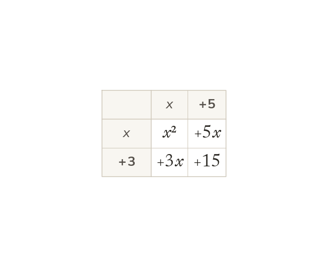

Four products from two brackets
Every term in the first bracket multiplies every term in the second. So (x + 3)(x + 5) has four products.
Every term in the first bracket multiplies every term in the second. So (x + 3)(x + 5) has four products, one in each cell of the grid.